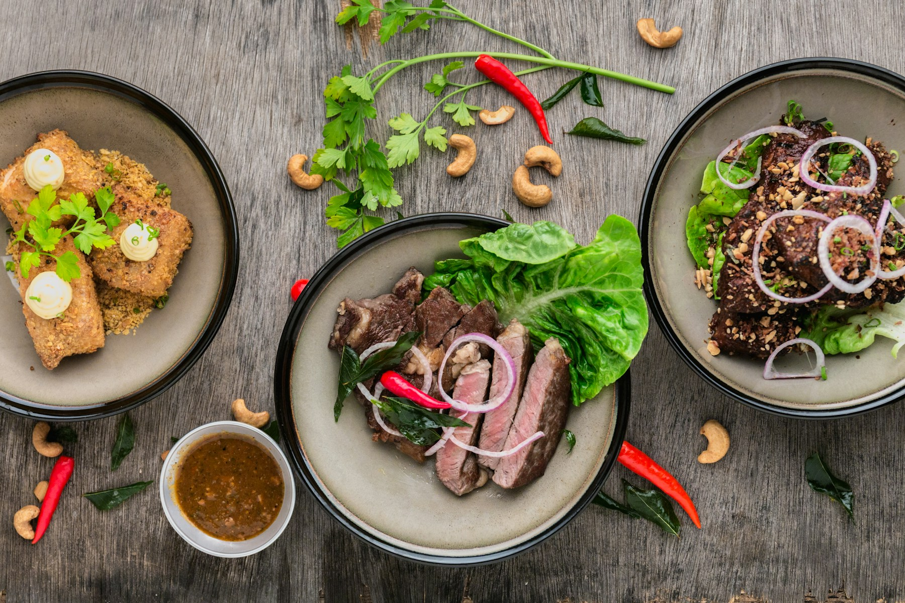

Le fait maison
Des recettes préparées avec attention pour préserver le goût et la générosité des plats.
Une cuisine généreuse, imaginée à Bordeaux et faite pour rassembler.
Vite et Gourmand
Depuis 25 ans, Julie et José partagent leur goût des recettes conviviales et des produits bien choisis. Leur savoir-faire s'est construit autour d'une idée simple : proposer une cuisine généreuse, préparée avec soin et facile à partager.
Installés à Bordeaux, ils accompagnent les repas du quotidien comme les grands rendez-vous. Chaque menu est pensé pour offrir une expérience chaleureuse, de la première bouchée jusqu'à la livraison.

Ce qui nous guide
Des recettes préparées avec attention pour préserver le goût et la générosité des plats.
Une équipe à l'écoute des besoins de chaque client, à Bordeaux et dans ses alentours.
Des formules pensées pour créer de beaux moments autour d'une table.
Découvrez nos menus et choisissez la formule qui correspond à votre événement.
Voir nos menus